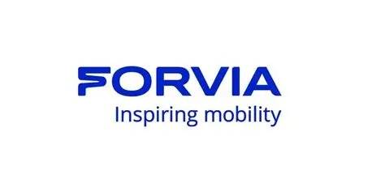
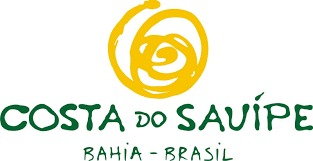
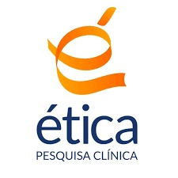

Before
Mental health leaves keep happening and nobody can explain why.
After
HR and leaders recognize early signs and handle the first conversations with method, before they turn into sick leave or a lawsuit.
I help companies recognize and address psychosocial risks, support their leaders and handle situations of work-related illness. With almost 30 years of experience in Occupational Medicine, I combine clinical insight with corporate reality to turn complex problems into clear next steps.
Dr. Ana Paula Teixeira · CRM-BA 12797 · RQE 7237 · ICOH · ABERGO · Board Academy 2024
Occupational Physician · Researcher · Author · Speaker
Talks · more than 10,000 professionals trained · 99% positive ratings
Years of corporate practice in mining, steel, laboratories and organizations of every size
OMIS-R in Brazil · Translation and validation of the Occupational Moral Injury scale into Brazilian Portuguese
Quando o Trabalho Dói · Nominated for the 7th Ecos da Literatura Award · AssedioNet Publishing, 2025
Choose the starting point closest to your need. In the initial conversation, I understand the context and recommend the most suitable format.
To raise awareness among teams and align leaders on mental health, psychosocial factors, NR-1 and the prevention of illness.
Format: talks for events, conventions and larger groups, online or in person.
Explore the talks → Need to work through a situation in more depth?For smaller groups that need to work through real situations, listen more broadly and build the tools to act day to day.
Format: facilitated sessions for 8 to 25 people, with topic and audience defined together with the company.
Explore the circles → Need to prepare your leaders for the pressure on their teams?For HR and leaders who want to prevent and manage the stressors in their own team, with more clarity and method.
Format: the SMCIT questionnaire and individual mentoring, in two steps.
Understand Executive Guidance →Tell me briefly what is happening. In the initial conversation, I understand the context and suggest a possible path, without assuming that every need calls for the same service.






Dr. Ana Paula is a professional who, through her work, invites us to reflect on how caring for people is also caring for organizations and the results they seek, so that those results are reached in a healthier and more sustainable way. Her contributions broaden our view of how important it is to build more humane and healthy workplaces. As an HR manager, this perspective helps me become an ever more conscious leader.
Dr. Ana Paula combines knowledge, ethics, principles and values with a deeply human way of sharing her experience. Her teaching helped transform my professional outlook, strengthening my purpose and my conviction that it is possible to promote well-being in organizations with knowledge, sensitivity and real impact on people's lives.
Just stopping by to thank you for the guidance and for sending the material. I am sure it will be very useful and will help us keep moving forward in this process. Thank you so much for your attention, availability and all the support!
I read the reports. I was impressed by the quality and richness of the information presented.
They scroll automatically. Hover to pause and readSwipe sideways to see more →
Your commitment to this cause is admirable and inspiring. Proud of your contributions and grateful that you shared your vision with us!
Doctor, your participation was essential to the success of this initiative. We are all very happy and fulfilled with the impact of this moment. Here's to more initiatives, more women and more extraordinary experiences!
Congratulations, Dr. Ana! Your exceptional professional skill and innovative approaches encourage us to practice one of Socrates' most valuable lessons: 'Know thyself.'
Excellent talk and program!
It was a pleasure to be with you today. It is clear that you do your work with a lot of soul and personal dedication.
Simply the best! I am very grateful to know a person and occupational physician who makes a difference wherever she goes... wonderful!
Grateful for the opportunity to listen to and learn from a great specialist.
Congratulations on your wonderful interview! I was deeply impressed by how clearly and inspiringly you spoke about empathy. Your ability to convey the importance of this essential human quality is truly admirable.
You are my inspiration. I admire your intelligence, your strength, your respect and your pursuit of knowledge to help people.
Mental health leaves keep happening and nobody can explain why.
HR and leaders recognize early signs and handle the first conversations with method, before they turn into sick leave or a lawsuit.
NR-1 now requires companies to address psychosocial factors, and the company does not know where to start or what to document.
Management gains a common language and technical criteria to support evidence and organize the next step.
A sensitive case (work-relatedness, return to work, conflict) is stalled for fear of making the wrong decision.
The decision stops being improvised: clinical reading, mapped risks and written recommendations.
Results vary with each organization's context. The method does not.
Occupational Medicine · CRM-BA 12797 · RQE 7237 · Almost 30 years of practice · Research in occupational mental health
I am Dr. Ana Paula Teixeira, an occupational physician, author and researcher in occupational mental health. For almost three decades I have worked with organizations of different sizes and sectors, including mining, steel and laboratories.
I graduated in Medicine from the Federal University of Bahia (UFBA, 1996), I am a specialist in Occupational Medicine (RQE 7237) and a master's candidate in Health Technologies at Escola Bahiana, where I research the validation of the OMIS-R scale for Brazilian Portuguese.
With companies, I analyze situations where mental health, working conditions and management decisions intersect. My focus is to organize the problem and define next steps that fit each organization's context, without treating different situations as if they had the same answer.
I am the author of Quando o Trabalho Dói (When Work Hurts, AssedioNet Publishing, 2025), nominated for the 7th Ecos da Literatura Award, and a member of ICOH, ABERGO and ANAMT/AMB. I grew up in Alagoinhas and worked early in my father's company: I know the weight of a working day from the manager's side too.
A 27-page guide (in Portuguese) for professionals who need to assess, with method, the relationship between mental disorders and the work context. Based on Brazilian Federal Council of Medicine Resolution 2,323/2022 and NR-1.
Get the free guide →

On occupational illness, organizational culture and the invisible cost when work hurts people.
A book for those who live in or lead workplaces and need to name what is happening: occupational illness, toxic culture, moral injury, burnout. Written in accessible language without giving up clinical rigor. Available in Portuguese.
Nominated for the 7th Ecos da Literatura Award · AssedioNet Publishing, 2025.
I research moral trauma, injury, courage and resilience at work. In my master's degree I am translating and validating the international OMIS-R scale for Brazilian Portuguese, an instrument designed to map Occupational Moral Injury in different organizational contexts.
This field helps name experiences that do not fit only under "stress", "low resilience" or "interpersonal conflict": situations in which decisions, targets, omissions or institutional practices wound professional identity, trust and integrity.
Some experiences at work do not only hurt the routine. They hurt identity, trust and integrity.
Occupational Moral Injury looks at the impact of working against core values, witnessing injustice or upholding decisions that break trust.
Validating the scale widens the technical toolkit for investigating moral suffering at work with more precision and less improvisation.
The topic connects with mental health, organizational integrity, ethical leadership, return to work and the prevention of psychosocial risks.
Every 15 days I write about what happens to people who know what is right but cannot find the conditions to do it, and about what organizations can change. The full letter arrives in your inbox (in Portuguese).
Read about the newsletter →Publications for those who want to study mental health at work from complementary angles: illness, women's voices, burnout and spirituality. All in Portuguese.
My central book on occupational illness, organizational culture and the invisible cost when work hurts people and institutions.
About the book → Book Cinquenta e três formas de encontrar Deus (Fifty-three ways to find God, beyond pandemics)Reflections on crisis, spirituality and personal growth, born from the questions the pandemic rekindled about God, meaning and passage.
See on Amazon → Digital guide Quando Ela Fala, Todo Mundo Ouve (When She Speaks, Everyone Listens)A practical guide for women who want to take a clear stand at work, with real examples of conscious, firm and respectful communication.
Open the guide → E-book Burnout: como proteger sua vida e seu trabalho da exaustão (Burnout: how to protect your life and your work from exhaustion)A practical guide to the four levels of exhaustion, warning signs, seeking professional support and ways to protect yourself from burnout.
See on Hotmart →Technical articles (in Portuguese) on NR-1, psychosocial factor assessment, leadership and occupational health, each one citing the official sources.
Is a questionnaire mandatory? Do you need a psychologist? What NR-1 requires, based on what Brazil's Ministry of Labor has published.
Read the article → Assessment and diagnosis HSE-IT: How to Measure Psychosocial Risks at WorkWhat the British instrument measures in its seven domains, how to apply it and what to do with the results.
Read the article → Assessment and diagnosis Psychosocial Assessment or Psychosocial Factor Assessment?One looks at the person, the other looks at the work. Which one NR-1 asks for, and why the confusion is costly.
Read the article → Leadership and culture Breast Cancer at Work: The Role of LeadershipFrom the first conversation to the return: what the manager says, what they need to know and how to reorganize the team without overload.
Read the article → Leadership and culture I'm Not a Toxic Leader: How to Know If You AreThe signs of leadership that makes a team sick, and what changes when those who lead start to see them.
Read the article → Occupational health and strategy The CUIDAR Method: Six Steps from Mental Health to StrategyFrom governance to review: what to deliver at each step, the most common mistake and the 90-day plan.
Read the article →A selection of public appearances in the press, radio, TV, podcasts and specialized channels on health, management and work (in Portuguese).

A Tarde · Mental health becomes an obligation in Brazilian companies
If your company is responding to NR-1, structuring mental health at work or dealing with a concrete situation of illness, the first conversation helps organize the problem.